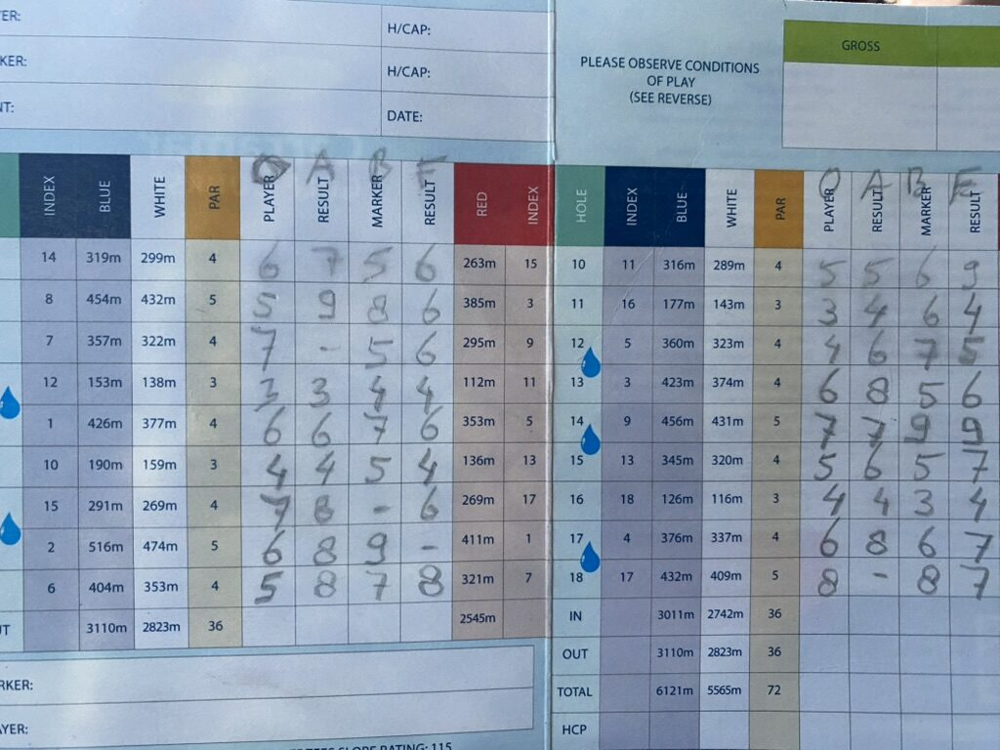
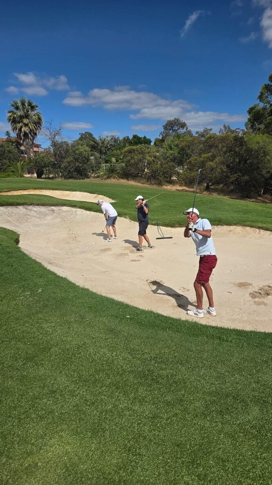
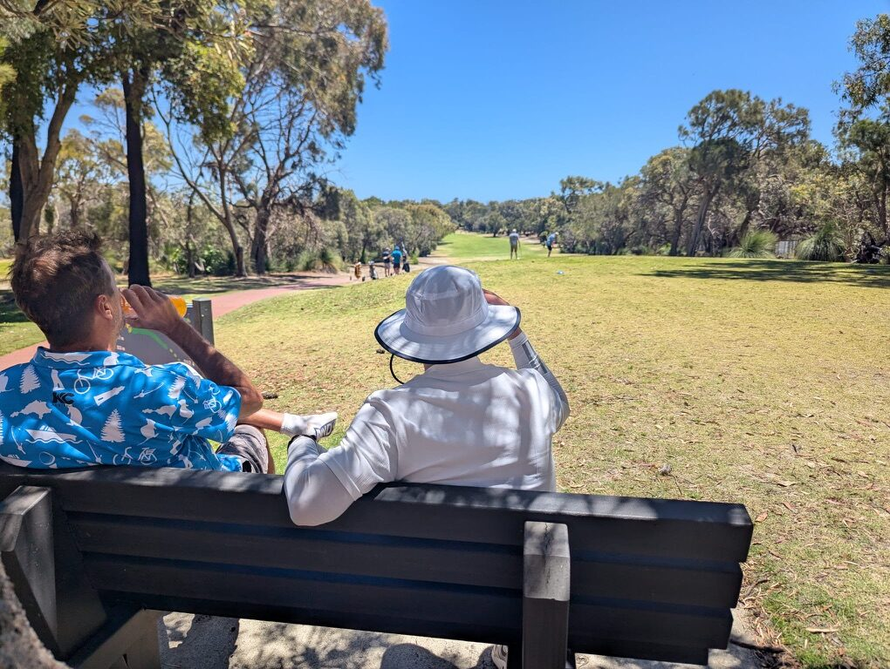
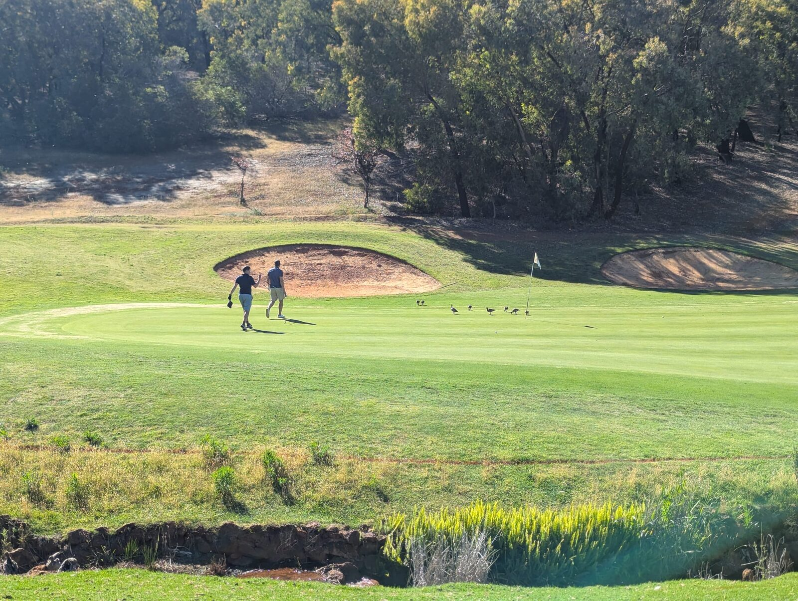

2026 Program
Golf courses and exact timings are still to be confirmed and will be updated closer to the trip. The overall shape: arrival Thursday, two qualifying rounds, matchplay finals and flights home on the Sunday.
Thursday 15 October: Arrival
15 October 2026
- Crew arrives in Perth
- Easy beers at 1 Bantry Court, Kallaroo
- Settle in, catch up, early night before golf starts
Friday 16 October: Qualifying Round 1 Course TBD
16 October 2026
- Wake up + breakfast
- Stableford qualifying round
- Longest drive / nearest the pin, holes TBD
- Evening plans TBD
Saturday 17 October: Qualifying Round 2 Course TBD
17 October 2026
- Wake up + breakfast
- Stableford qualifying round
- Longest drive / nearest the pin, holes TBD
- Night out TBD
Sunday 18 October: Finals & Departure Course TBD
18 October 2026
- Wake up, breakfast, pack
- Matchplay finals with handicap correction: top 3 Stableford scorers from Fri/Sat play off for the Cup
- Awards ceremony & trophy presentation
- Drive to airport, flights home
Format reminder

Day 1 & 2: Stableford. Handicap is revised each evening: the better of your previous handicap and the day's result carries forward.
Day 3: The top 3 Stableford scorers from the two qualifying rounds play the Winners Flight, matchplay with handicap correction, for the Kangaroo Cup.
On the course last year


